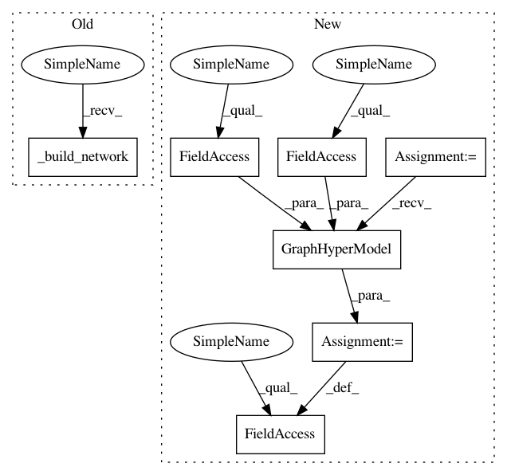

5f2151e9e8eb9578b4a3039ba36bcfff61f3af83,autokeras/auto_model.py,GraphAutoModel,__init__,#GraphAutoModel#Any#Any#Any#Any#Any#Any#,505
Before Change
directory=directory,
seed=seed
)
self._build_network()
def _meta_build(self, dataset):
pass
After Change
directory=directory,
seed=seed
)
self.hypermodel = graph.GraphHyperModel(self.inputs, self.outputs)
def _meta_build(self, dataset):
pass
In pattern: SUPERPATTERN
Frequency: 4
Non-data size: 7
Instances
Project Name: jhfjhfj1/autokeras
Commit Name: 5f2151e9e8eb9578b4a3039ba36bcfff61f3af83
Time: 2019-07-23
Author: jhfjhfj1@gmail.com
File Name: autokeras/auto_model.py
Class Name: GraphAutoModel
Method Name: __init__
Project Name: jhfjhfj1/autokeras
Commit Name: 5f2151e9e8eb9578b4a3039ba36bcfff61f3af83
Time: 2019-07-23
Author: jhfjhfj1@gmail.com
File Name: autokeras/auto_model.py
Class Name: GraphAutoModel
Method Name: __init__
Project Name: keras-team/autokeras
Commit Name: 5f2151e9e8eb9578b4a3039ba36bcfff61f3af83
Time: 2019-07-23
Author: jhfjhfj1@gmail.com
File Name: autokeras/auto_model.py
Class Name: AutoModel
Method Name: _meta_build